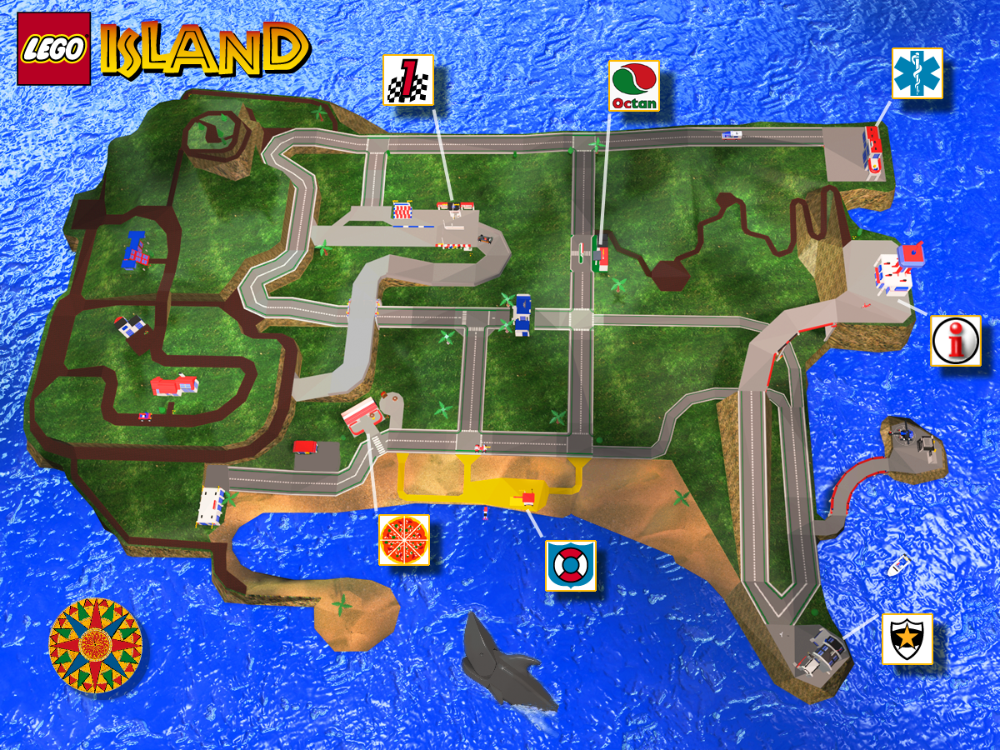

This is where you start your journey! The Infomaniac is here to help you out. First, sign in using the blue book, and then select one of the five main characters to play as. You can listen to the radio, check out the score cube, which keeps track of your scores for all missions and characters, and even ride an elevator up to the observation deck! If you stop at the second floor using the elevator, you'll get a quick look into what may be Phanta Sea. From the observation deck, you can get tips from the Pirate Skeleton, listen to some more tunes, and change the sky color and lighting over the island, among other things.
Ah yes, the Pizzeria. The only place on the island to eat! Here you can get one of Papa Brickolini's famous pizzas, or listen to one of Mama Brickolini's piano tunes. If you click on the Pizzeria, you can help deliver pizzas across the island. Just don't take too long or you might get a bad score on the cube! There's also a jukebox next door that has some classic tunes to listen to.
Visit the police station to build the helecopter. As with all the builds, Bill Ding is here to help you if you get stuck at any point during the building process. If you're not digging the sultry Tenor Saxophone solos, there's also a radio here, and some donuts you can click on to summon police officers to eat. If you're lucky, you might run into Captain D. Rom (or CD Rom for short). You might also catch a glimpse of Laura and Nick Brick when they're not patroling the island.
Here you'll likely meet Snap Lockitt or Valerie Stubbins, two jet-ski enthusiasts. By clicking on the building, you can build your own customized jet-ski, which you can then race the aforementioned aficionados.
Come visit the Octan Gas Station/Garage to build a dune buggy to cruise around the island on. Nubby Stevens and Nancy Nubbins are always around to talk to. Listen to the radio, or help out Nubby by clicking on the hat and drive the tow truck to the race track.
At the LEGO Island Raceway, you'll likely come across Studs Linkin, a bragadocious formula one racer. It's here that you can build the race car, and also race said car against Studs and Rhoda Hogg.
Visit Dr. Clickitt in the medical center to drive the ambulance around and help save denziens in peril! You may spot duo Enter and Return, who always seem to be bickering about something.
Where the infamous Brickster is held. This is also where the helicopter landing pad is. Whatever you do, don't deliver a pizza here with the helicopter built! There's a good chance the Brickster will excape and dismantle the island!
The bank is where banker Buck Pounds works, but you can't go inside as it's also closed for remodeling!
Nothing much to see here, as Ed Mail never seems to visit the station. You might catch him roaming around the island.
A bit of a ghost town, with not much to do. This area is where you'll go when the Brickster first steals the ambulance and starts taking apart buildings. Maggie Post seems to live in the Southern-most house. You can click on the houses, and they might even change shape! Up North, you can travel up a spiral path to the top of Mountain Park to get a great view of the island.
Located behind the garage. If you're lucky, you might get to see a show from the Flying Legandos here!
